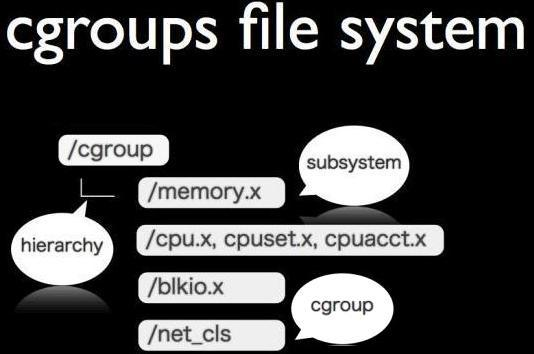
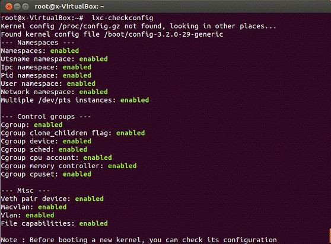
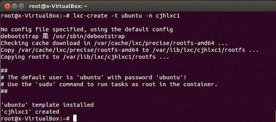
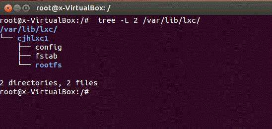
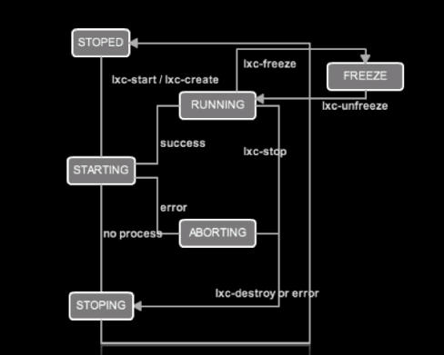
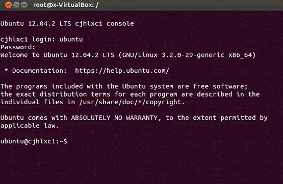
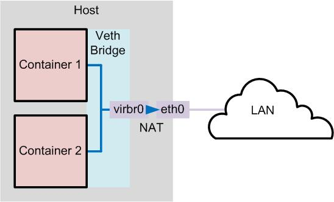
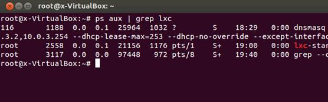

在 IBM Bluemix 云平台上开发并部署您的下一个应用。
cgroups 简介
LXC 项目由一个 Linux 内核补丁和一些用户空间（userspace） 工具组成。这些工具使用由补丁增加的内核新特性，提供一套简化的工具来维护容器。2.6.29 版本后的 Linux 内核版本已经包含该补丁提供的大部分功能。所以强烈建议使用最新的内核源代码。LXC 在资源管理方面依赖 Linux 内核的 cgroups (Control Groups) 系统，cgroups 系统是 Linux 内核提供的一个基于进程组的资源管理的框架，可以为特定的进程组限定可以使用的资源。它最初由 Google 的工程师提出，后来被整合进 Linux 内核。cgroups 也是 LXC 为实现虚拟化所使用的资源管理手段，可以说没有 cgroups 就没有 LXC。cgroups 文件系统结构见图 1 。
图 1.cgroups 文件系统结构
相关名词解释
控制族群（control group）：控制族群就是一组按照某种标准划分的进程。cgroups 中的资源控制都是以控制族群为单位实现。一个进程可以加入到一个控制族群，也可以迁移到另一个控制族群。
层级（hierarchy）。控制族群可以组织成 hierarchical 的形式，既一颗控制族群树。控制族群树上的子节点控制族群是父节点控制族群的孩子，继承父控制族群的特定的属性。
子系统（subsytem）。一个子系统就是一个资源控制器，比如中央处理器子系统就是控制中央处理器时间分配的一个控制器。子系统必须附加（attach）到一个层级上才能起作用，一个子系统附加到某个层级以后，这个层级上的所有控制族群都受到这个子系统的控制。主要包括如下 9 个子系统：
- blkio ： 这个子系统为块设备设定输入/输出限制，比如物理设备（磁盘，固态硬盘，USB 等）。
- cpu ： 这个子系统使用调度程序提供对 中央处理器的 cgroup 任务访问。
- cpuacct ： 这个子系统自动生成 cgroup 中任务所使用的中央处理器报告。
- cpuset ： 这个子系统为 cgroup 中的任务分配独立中央处理器（在多核系统）和内存节点。
- devices ： 这个子系统可允许或者拒绝 cgroup 中的任务访问设备。
- freezer ： 这个子系统挂起或者恢复 cgroup 中的任务。
- memory ： 这个子系统设定 cgroup 中任务使用的内存限制，并自动生成由那些任务使用的内存资源报告。
- net_cls ： 这个子系统使用等级识别符（classid）标记网络数据包，可允许 Linux 流量控制程序（tc）识别从具体 cgroup 中生成的数据包。
- ns ：ns 子系统提供了一个将进程分组到不同名称空间的方法。在具体名称空间中，进程可彼此互动，但会与在其它名称空间中运行的进程隔绝。这些分开的名称空间在用于操作系统级别的虚拟化时，有时也称之为容器。
搭建第一个 LXC 虚拟计算机
本文使用的 Linux 发行版是 Ubuntu 12.10 ，首先安装软件包：
#apt-get install lxc
安装软件包后要检查 Linux 发行版的内核对 LXC 的支持情况，可以使用下面命令 lxc-checkconfig 查看，见图 2 。
图 2.lxc-checkconfig 命令
lxc-checkconfig 命令检查之后如果所有项目显示“enabled”表示可以直接使用 LXC。
建立一个 Ubuntu Server LXC 虚拟计算机系统
使用如下命令构建（执行过程见图）3：
#lxc-create -t ubuntu -n cjhlxc1
说明这里使用的是 ubuntu 模板，模板文件保存在/usr/lib/lxc/templates/目录下，这个目录下还有其他模板，可以使用如下命令查看，命令输出如下：
# tree /usr/lib/lxc/templates/ /usr/lib/lxc/templates/ ├── lxc-busybox ├── lxc-debian ├── lxc-fedora ├── lxc-opensuse ├── lxc-sshd ├── lxc-ubuntu └── lxc-ubuntu-cloud
图 3.建立一个 Ubuntu Server LXC 系统
说明：安装过程要持续一段时间，另外安装过程要保证互联网连接。
上面命令完成后, 会在 /var/lib/lxc 目录中, 产生虚拟计算机 cjhlxc1 ，它的目录结构见图 4 。
图 4.虚拟计算机 cjhlxc1 目录结构
LXC 虚拟计算机的基本管理
了解 LXC 虚拟计算机的管理命令
LXC 常见命令说明见表 1
表 1 LXC 常见命令说明
| 命令名称 | 功能 | 使用方法 |
|---|---|---|
| lxc-create | 用于创建一个容器 |
lxc-create -n name [-f config_file] -n 后面跟要创建的容器名字 例如：-n foo -f 后面跟容器配置文件的路径 -t template 模板名称 |
| lxc-destroy | 用来销毁有关容器 |
lxc-destroy -n name -n 后面跟容器名字 |
| lxc-execute | 用于在一个容器执行应用程序 |
lxc-execute -n name [-f config_file] [ -s KEY=VAL ]command -n 后面跟容器名字（容器名字用于管理容器）例如：-n foo -f 后面跟容器配置文件的路径（如果没有配置文件，可以直接用-s 指定配置选项，如果什么都没有，系统采用默认策略）例如：-f foo.conf -s 后面跟配置键值对 例如：LXC.cgroup.cpu.shares=512 command 为要执行的命令 例如：/bin/bash 这个命令会 mount /proc 并且会自动创建/销毁容器。 |
| lxc-start | 用于在容器中执行给定命令 |
lxc-start -n name [-f config_file] [-c console_file] [-d] [-s KEY=VAL] [command] -d 将容器当做守护进程执行 -f 后面跟配置文件 -c 指定一个文件作为容器 console 的输出，如果不指定，将输出到终端 -s 指定配置 如果没有指定命令，lxc-start 将要运行 /sbin/init |
| lxc-console | 打开容器控制台 |
lxc-console -n name -n 容器名 |
说明：更加详细的 lxc 命令列表和使用方法请读者参考官方网站文档（http://lxc.sourceforge.net/ ）。
图 5 是主要 LXC 命令执行过程的示意图
图 5.LXC 命令执行过程的示意图
LXC 常见命令说明举例
启动 LXC 虚拟计算机
# lxc-start -n cjhlxc1
确实的账号和密码都是 ubuntu 然后登录虚拟计算机见图 6
图 6.登录虚拟计算机
列出当前系统所有的容器
检查目前有哪几个容器启动(若没有任何结果，则目前都没有容器启动)
# lxc-ls cjhlxc1 foo
使用 console 登入容器第 3 个控制台
$ lxc-console -n cjhlxc1 –t 3
说明：如果没有指定 -t N 选项，则一个没有被使用的控制台将自动选择。要退出控制台，使用快捷键 Ctrl-a q 。
停止运行一个容器
# lxc-stop -n cjhlxc1
获取一个容器的状态
# lxc-info -n ol6ctr1
把一个容器销毁
# lxc-destroy -n cjhlxc11
复制一个容器
# lxc-clone -o cjhlxc1 -n ol6ctr2
暂停或恢复一个容器
# lxc-freeze -n cjhlxc1 # lxc-unfreeze -n cjhlxc1
LXC 虚拟网络接口设置
了解 LXC 内置的网络架构
不管是哪套虚拟系统，只要是运作在 Linux 系统架构之内，所使用的虚拟网络都是 Linux 系统缺省的虚拟网络架构（即 TAP/TUP, Bridge）图 7 是示意图 。
图 7.LXC 虚拟网络接口示意图
图 7 这个结构中两个容器使用 Veth Bridge，因为默认情况下，LXC 的模板脚本设置网络都是基于 Veth Bridge。在这种模式下，容器从 dnsmasq 服务器获取其 IP 地址。主机允许的容器连接到网络的其余部分（使用 iptables 的 NAT 规则 ，但这些规则不允许传入的连接到容器）。
除了 Veth Bridge 外，LXC 虚拟计算机还支持 Macvlan Bridge 和 Macvlan VEPA。有时我们可能需要一块物理网卡绑定多个 IP 以及多个 MAC 地址，虽然绑定多个 IP 很容易，但是这些 IP 会共享物理网卡的 MAC 地址，可能无法满足我们的设计需求，所以有了 MACVLAN 设备，其工作
MACVLAN 会根据收到包的目的 MAC 地址判断这个包需要交给哪个虚拟网卡。限于篇幅这里介绍 Macvlan Bridge 和 Macvlan VEPA，感兴趣的用户可以参考参考文献中的介绍。
与 KVM 相同 LXC 安装完成，缺省就会产生一个网络接口（包含以下功能：交换机（Switch Hub） + DHCP 服务器 + NAT + Cache DNS 服务器），网络接口名称也就是 lxcbr0，可以通过如下命令验证：
# brctl show bridge name bridge id STP enabled interfaces lxcbr0 8000.3eef2e882ac9 no vetheCYpw4
由上面的命令输出图就可以明显看到 lxcbr0 的相关信息，而这个网络接口，除了扮演交换机的功能之外，缺省也提供了 NAT 与 DHCP 的功能，简单来说就是 lxcbr0 除了提供交换机的功能之外，也提供了 DHCP 服务与 DNS 缓存服务 ， 再通过 iptables 启动 NAT 的功能，由以下命令可以来证明，命令输出如下：
# iptables -t nat -L -n Chain PREROUTING (policy ACCEPT) target prot opt source destination Chain INPUT (policy ACCEPT) target prot opt source destination Chain OUTPUT (policy ACCEPT) target prot opt source destination Chain POSTROUTING (policy ACCEPT) target prot opt source destination MASQUERADE all -- 10.0.3.0/24 !10.0.3.0/24
DHCP 服务与 DNS 缓存服务的功能，可以通过如下命令验证
#ps aux | grep lxc
命令输出见图 8
图 8.查看 DHCP 服务与 DNS 缓存服务
修改 LXC 网络接口的方法
一般我们是通过修改 lxcbr0 的设置文件的方法来实现的。通过〝ifconfig lxcbr0〞的命令，可以得知 lxcbr0 本身的 IP 地址，而由〝ps aux | grep dnsmasq〞的命令，也可以清楚看到 DHCP Server 分配的 IP 范围，因此可以知道 LXC 缺省虚拟网络预设的 IP 区段为 10.0.3.0/24，那么，这些信息，可以修改吗？当然可以，以上这些网络信息，是 LXC 缺省预设的网络设置，所以可以通过修改配置文件的方式，来修改相关信息，以符合实际应用的状况，可以利用编辑器来修改 LXC 的网络配置文件：
# vi /etc/default/lxc
清单 1./etc/default/lxc 文件内容
LXC_BRIDGE="lxcbr0" LXC_ADDR="10.0.3.1" LXC_NETMASK="255.255.255.0" LXC_NETWORK="10.0.3.0/24" LXC_DHCP_RANGE="10.0.3.2,10.0.3.254" LXC_DHCP_MAX="253" LXC_SHUTDOWN_TIMEOUT=120
用户修改后要重新启动网络服务，使用如下命令：
#service lxc-net restart
设置 LXC 使用物理网络接口
相比 KVM 来说，LXC 可以直接使用物理网络接口（比如在本文中物理网卡是 eth0、eth1，笔者准备把 eth0 分配给 LXC 虚拟网络 ）。首先使用“ ifconfig –a”命令查看一下，其中而 eth1 为实体计算机实际对外联机所使用的网络接口，所 eth0 ，就可以拿来设定给 LXC 虚拟计算机来使用。然后修改修改 LXC 虚拟计算机的配置文件：/var/lib/lxc/cjhlxc1/config
#vi /var/lib/lxc/cjhlxc1/config
清单 2 /var/lib/lxc/cjhlxc1/config 文件内容
lxc.network.type=phys lxc.network.link=eth0 lxc.network.flags=up lxc.utsname = cjhlxc1 #lxc.network.hwaddr = 00:16:3e:f9:ad:be #此行要注释掉# lxc.devttydir = lxc lxc.tty = 4 lxc.pts = 1024 lxc.rootfs = /var/lib/lxc/myt2/rootfs lxc.mount = /var/lib/lxc/myt2/fstab lxc.arch = amd64 lxc.cap.drop = sys_module mac_admin lxc.pivotdir = lxc_putold
修改完成后存盘退出。简单说明一下以上参数：
lxc.network.type 指定用于容器的网络类型，包括四种类型：
- empty：建立一个没有使用的网络接口
- veth：容器将链接到 lxc.network.link 定义的网桥上，从而与外部通信。之前网桥必须在预先建立。
- macvlan：一个 macvlan 的接口会链接到 lxc.network.link 上。
- phys： lxc.network.link 指定的物理接口分配给容器。
lxc.network.flags 用于指定网络的状态，up 表示网络处于可用状态。
lxc.network.link 用于指定用于和容器接口通信的真实接口，比如一个网桥 br0 。
lxc.network.hwaddr 用于指定容器的网络接口的 mac 地址。
下面修改主机网络配置文件
#vim /etc/network/interface
注意此时配置文件是空文件，没有内容。通常可以设置为固定 IP 地址模式（见清单 3）或者通过 DHCP 服务器获取 IP 地址模式（见清单 4）
清单 3.固定 IP 地址模式
auto lo iface lo inet loopback auto eth0 iface eth0 inet dhcp dns-nameservers 10.0.0.4
清单 4.通过 DHCP 服务器获取 IP 地址模式
auto lo
iface lo inet loopback
auto eth0
iface eth0 inet static
address 10.0.0.3
netmask 255.255.255.0
dns-nameservers 10.0.0.4修改完成后存盘退出。然后重新启动网络服务：
#/etc/init.d/networking restart
下面启动 LXC 虚拟计算机
# lxc-start -n cjhlxc1
注意一旦 LXC 虚拟计算机启动成功，在宿主计算机上使用〝ifconfig -a〞查看主机网络接口，用户会发现此时网络接口 eth0 消失了，只有 eth1 。这是因为 eth0 已经让 LXC 虚拟计算机给使用了。然后我们使用如下命令“ lxc-console -n cjhlxc1”登录 LXC 虚拟计算机发现此时 LXC 虚拟计算机的网络接口是 eth0。然后我们可以使用 ping 命令测试一下 LXC 虚拟计算机和互联网是否联通。
总结
LXC 中文名称就是 Linux 容器工具，容器可以提供轻量级的虚拟化，以便隔离进程和资源，使用 LXC 的优点就是不需要安装太多的软件包，使用过程也不会占用太多的资源，本文循序渐进地介绍在 Linux 容器的建立和管理方法以及虚拟网络接口的设置方法。
参考资料
学习
- 访问 LXC 官方网站 ，可以查看更多关于 LXC 操作的信息。
- 关于 cgroups 的介绍，可以阅读 Fedora 项目的资源管理指南文档。
- 关于 LXC 虚拟计算机的网络接口 Macvlan Bridge 模式，可以阅读 Oracle Linux Administrator's Solutions Guide for Release 6 的第九章 9 Linux Containers。
- 在 developerWorks Linux 专区寻找为 Linux 开发人员（包括 Linux 新手入门）准备的更多参考资料。
讨论
- 加入 developerWorks 中文社区。查看开发人员推动的博客、论坛、组和维基，并与其他 developerWorks 用户交流。
条评论


IBM Bluemix 资源中心
文章、教程、演示，帮助您构建、部署和管理云应用。

developerWorks 中文社区
立即加入来自 IBM 的专业 IT 社交网络。

Bluemixathon 挑战赛
为灾难恢复构建应用，赢取现金大奖。
请 登录 或 注册 后发表评论。
注意：评论中不支持 HTML 语法